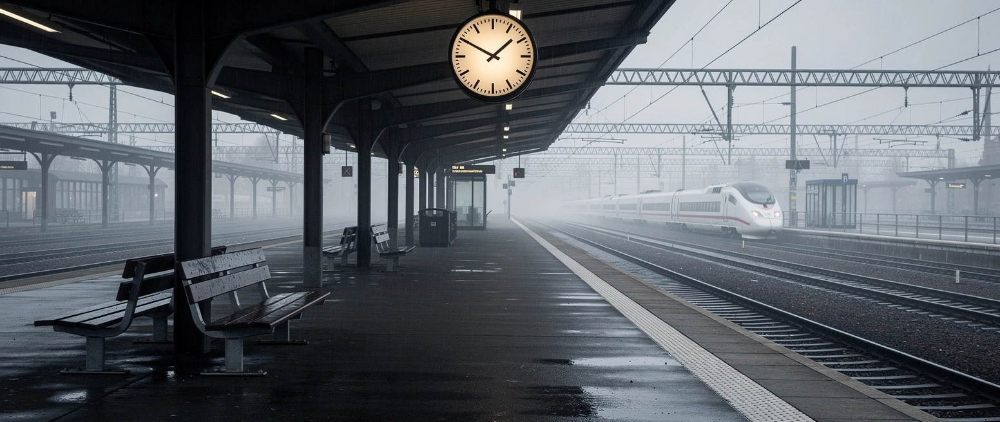

Neuer Minister, alte Gleise

Am frühen Morgen soll die SMS gekommen sein. Fritz Güntzler, als neuer Verkehrsminister vorgesehen, sagte Friedrich Merz ab: Steuern seien sein Fach, nicht die Schiene. So berichtet es die Bild. Sicher ist: Der designierte Nachfolger sprang ab, und Patrick Schnieder, den der Kanzler eigentlich loswerden wollte, bleibt im Amt. Ein Verkehrsminister auf Abruf.
Selbst aus den eigenen Reihen kam Kritik. Peter Altmaier schrieb öffentlich, der Umgang mit Schnieder mache ihn „betroffen und wütend".
Man kann sich über die Inszenierung aufregen. Wichtiger ist, was sie überdeckt. Seit zwanzig Jahren wechseln in Berlin die Verkehrsminister, sechs waren es, dazu vier Bahnchefs, und der Laden ist schlimmer als je zuvor.
Die Zahlen sind öffentlich. 2025 kamen im Fernverkehr nur noch 60,1 Prozent der Züge pünktlich, im Oktober zeitweise 51,5. Der Sanierungsstau im Netz wird auf 130 bis 136 Milliarden Euro beziffert. Stuttgart 21 ist erneut teurer geworden, 14,5 Milliarden, und öffnet nicht 2026, sondern frühestens Ende 2031. Die digitalen Stellwerke, seit Jahren versprochen, liegen hinter dem Plan.
Und die Schulden? Die sind tatsächlich gesunken, um fast zwölf Milliarden. Nur nicht, weil die Bahn gesünder wäre. Sie hat ihre Logistiktochter Schenker verkauft. Unterm Strich stand 2025 trotzdem ein Minus von 2,3 Milliarden.
Das ist das eigentliche Problem, und es ist älter als jeder Minister. Die Bahn ist ein Konzern, der Gewinn abwerfen soll und zugleich das Netz betreiben muss. Jahrelang floss die Energie ins Ausland: eine weltweite Logistiktochter, Bahnbetrieb in Großbritannien, eine Bilanz, die nach Weltkonzern aussah. Die Schiene zu Hause wurde derweil älter. 2024 zog der Bund die Reißleine und gliederte das Netz in eine eigene, gemeinwohlorientierte Gesellschaft aus, die InfraGO. Ein Eingeständnis, dass die Struktur zwei Jahrzehnte lang die falschen Dinge belohnt hat.
Es fehlt also nicht am Geld. Über 23 Milliarden fließen 2026 ins Netz. Es fehlt an zwei Dingen: an einer Struktur, die aufs Fahren zielt statt auf die Bilanz, und an jemandem, der lang genug bleibt, um dafür geradezustehen. Beides bekommt man nicht, indem man alle zwei Jahre den Minister austauscht. Ein neuer Kopf saniert keine einzige Weiche.
Mehr dazu: Deutschland schaltet sich ab